Liceo Scientifico Statale "E. Amaldi" · Bitetto (BA)
Classe 5^CSA
Attività PCTO e non
Triennio 2023 – 202601 — Profilo
Sono uno studente dell'ultimo anno del Liceo Scientifico "E. Amaldi" di Bitetto. O almeno lo sono ancora per poche ore, fino a quando non varcherò per l'ultima volta la stessa porta che mi accolse quando ero poco più di un bambino.
Se qualcuno mi avesse chiesto chi fossi il primo giorno di liceo, probabilmente avrei saputo rispondere soltanto con un nome, una classe e qualche interesse. Oggi, arrivato al termine di questo percorso, la risposta è molto più complessa. Cinque anni possono sembrare pochi sulla carta, ma vissuti giorno dopo giorno assumono un peso diverso. Sono stati anni di interrogazioni, viaggi, progetti, risate, difficoltà e momenti che allora sembravano ordinari, ma che oggi guardo con occhi completamente diversi. In questo tempo non sono cambiato soltanto io: siamo cambiati tutti. Quella che all'inizio era semplicemente una classe di ragazzi molto diversi tra loro è diventata un gruppo di persone che ha condiviso una parte importante della propria crescita. Ci siamo visti maturare quasi senza accorgercene, un giorno alla volta.
Le esperienze raccontate in questo sito rappresentano alcune delle tappe più significative del mio percorso. Tuttavia, il loro valore non risiede soltanto nelle competenze acquisite, ma anche nei ricordi che custodiscono: le persone incontrate, le conversazioni durante i viaggi, le sfide affrontate insieme e la sensazione di stare costruendo qualcosa senza sapere ancora dove ci avrebbe portati. Questo sito racconta il mio percorso scolastico, ma tra le sue righe racconta anche qualcosa di più: la storia di un ragazzo che entra al liceo con molte domande e ne esce con maggiore consapevolezza, nuove ambizioni e una classe che, senza accorgersene, è diventata uno dei ricordi più importanti della sua adolescenza.
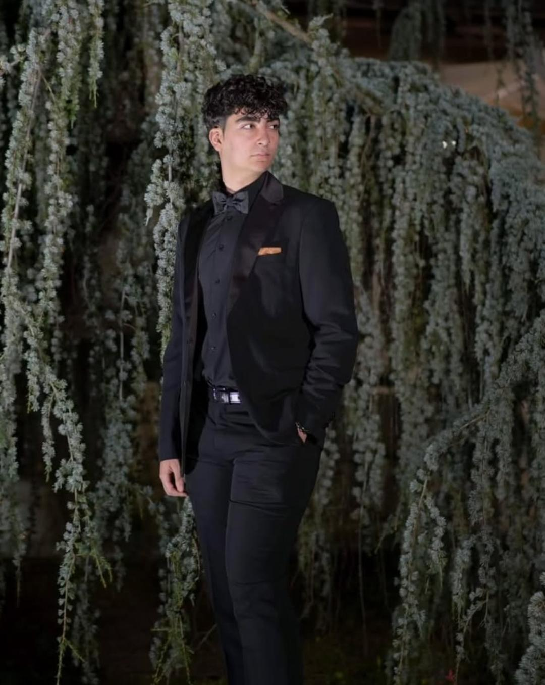
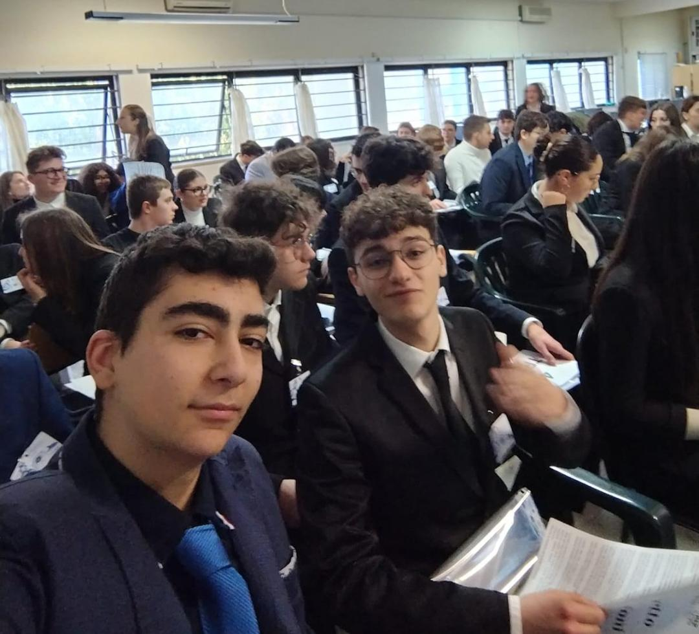
02 — PCTO
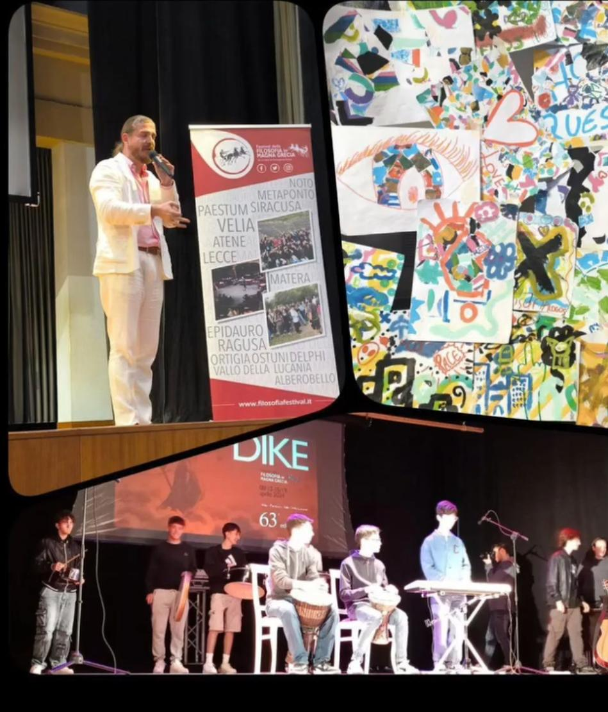
Associazione Festival della Filosofia in Magna Grecia — evento culturale e formativo di rilevanza nazionale rivolto agli studenti delle scuole superiori. Si propone di far rivivere l'antica vocazione filosofica del territorio della Magna Grecia attraverso laboratori, passeggiate filosofiche, dialoghi e performance artistiche.
L'esperienza, svoltasi in presenza nel Cilento, ha previsto la partecipazione a lezioni magistrali tenute da docenti universitari, dibattiti collettivi e laboratori pratici (teatro, espressione corporea, scrittura, fotografia). Il nucleo centrale è stato l'attualizzazione del pensiero filosofico antico per rispondere alle sfide della contemporaneità.
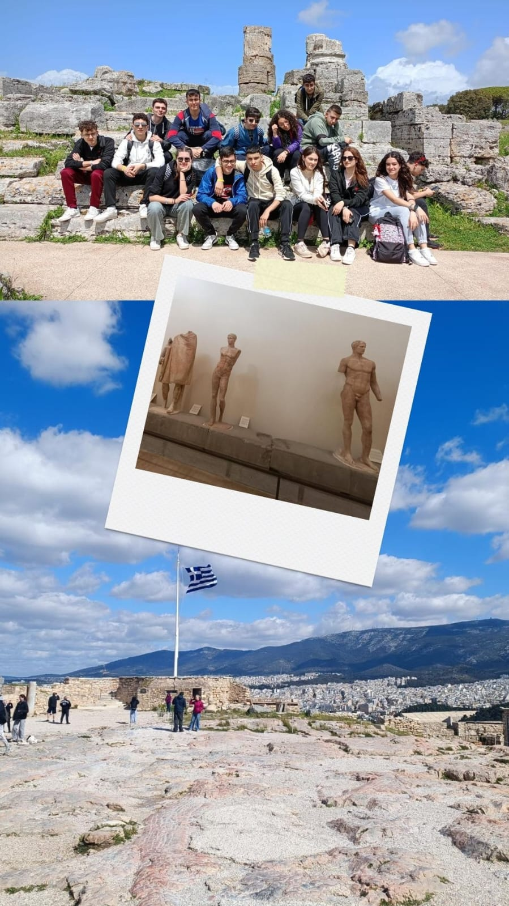
Variante internazionale del progetto precedente, l'evento si svolge direttamente nei luoghi natali del pensiero occidentale (Atene, Delfi, Epidauro), unendo l'approfondimento filosofico al viaggio di studio archeologico e interculturale.
L'esperienza ha rappresentato l'evoluzione naturale del percorso filosofico dell'anno precedente. Muovendosi tra i siti archeologici della Grecia, l'attività ha coniugato la divulgazione filosofico-storica con laboratori espressivi sul concetto di cittadinanza, democrazia e identità europea. La dimensione internazionale ha amplificato l'impatto formativo delle attività laboratoriali.
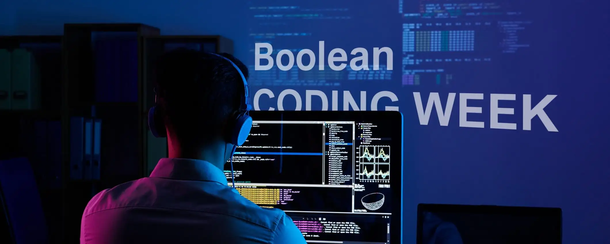
Boolean SRL è una delle principali tech-academy italiane specializzate nella formazione a distanza nel campo dello sviluppo software. Il corso ha introdotto le basi dello sviluppo web front-end attraverso lezioni sincrone ed esercitazioni pratiche guidate.
L'obiettivo era la progettazione e la scrittura del codice per creare una suite di mini-giochi in stile "arcade", partendo dalla struttura della pagina fino alla logica di interazione software. Approccio estremamente pratico e orientato alla creazione immediata di un prodotto funzionante.
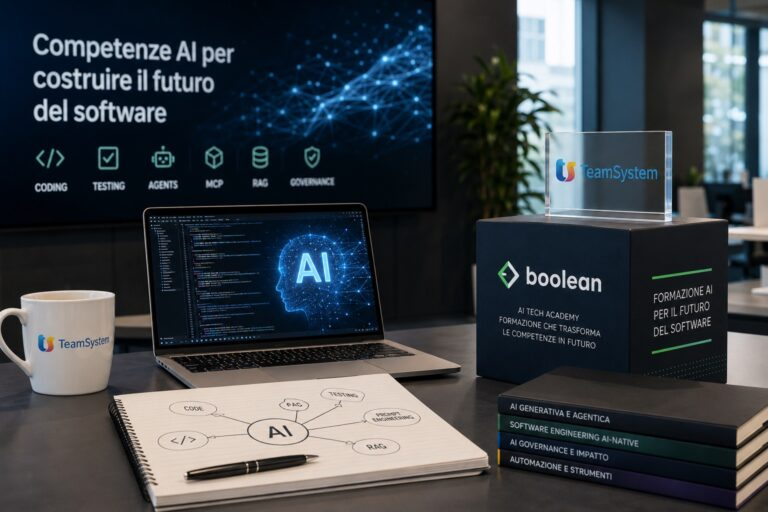
Boolean SRL — modulo focalizzato sull'integrazione di funzionalità di Intelligenza Artificiale all'interno di applicazioni web. Durante il corso sono state analizzate le modalità di connessione ad API esterne di modelli linguistici per creare interfacce web intelligenti e interattive.
La tematica di fortissima attualità ha avuto elevato valore orientativo, stimolando l'innovazione tecnologica personale. Il corso ha sensibilizzato sulle potenzialità e sull'etica dell'IA, rendendo necessaria un'ampia attività di studio e sperimentazione individuale successiva.
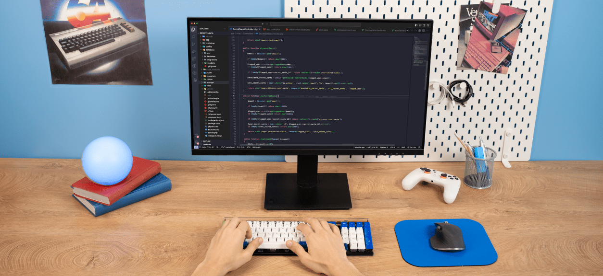
Boolean SRL — introduzione alla scienza dei dati e alla data analytics. Il corso ha guidato gli studenti nell'importazione, pulizia e manipolazione di dataset statistici mediante il linguaggio Python, per poi passare alla visualizzazione grafica dei dati tramite il software di Business Intelligence Tableau.
Utilizzo di strumenti software standard del mercato professionale, sviluppo del pensiero analitico e quantitativo, abilità nel creare dashboard interattive e grafici esplicativi per la data visualization.
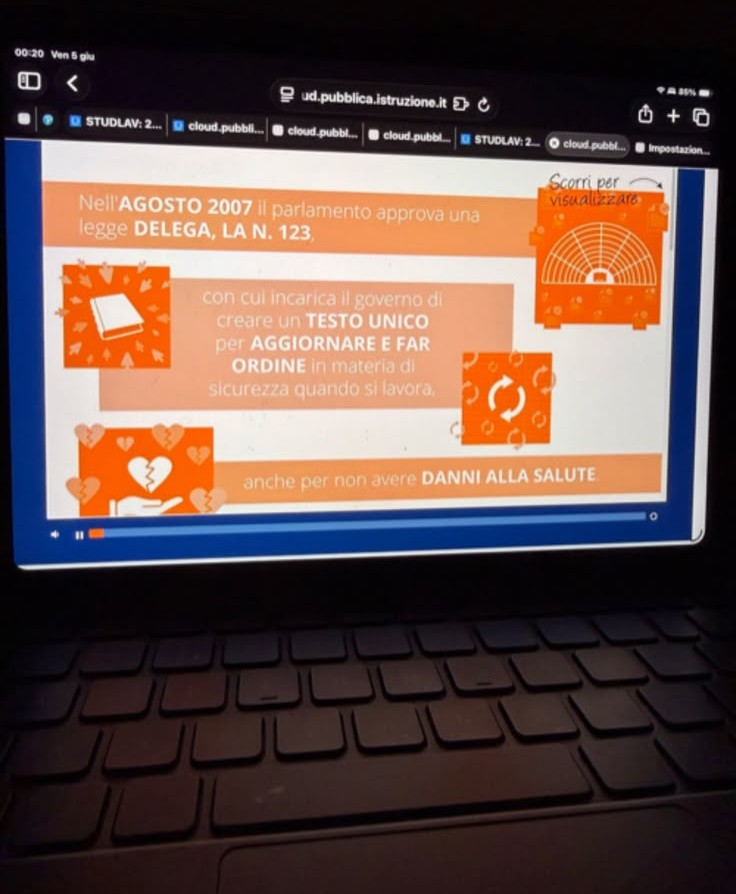
Modulo obbligatorio ai sensi del D.Lgs. 81/08. Il percorso ha affrontato i concetti di rischio, danno, prevenzione e protezione, l'organizzazione della sicurezza aziendale, i diritti e i doveri dei lavoratori, nonché i segnali di pericolo e le procedure di emergenza.
Il percorso ha portato all'acquisizione della certificazione ufficiale propedeutica a qualsiasi attività lavorativa futura, con sviluppo della consapevolezza dei diritti e doveri in tema di tutela della salute e della capacità di identificare i fattori di rischio aziendali ed ambientali.
03 — Riepilogo
| Anno Scolastico | Denominazione Attività / Ente | Tipologia / Ambito | Ore |
|---|---|---|---|
| 2023/2024 | Festival della Filosofia in Cilento — Ass. FFMG | Umanistico · In presenza | 30 |
| 2023/2024 | Boolean SRL – Coding Week: Arcade Collection | Digitale · Online | 8 |
| 2023/2024 | Corso sulla Sicurezza nei Luoghi di Lavoro — INAIL | Normativo · Online | 4 |
| 2024/2025 | Festival della Filosofia in Grecia — Ass. FFMG | Umanistico · Internazionale | 40 |
| 2024/2025 | Boolean SRL – Web Development: AI Apps | Digitale · AI | 8 |
| 2024/2025 | Boolean SRL – Data Week | Digitale · Data Analysis | 8 |
| Monte Ore Validato PCTO | 98 | ||
04 — Oltre il PCTO
Attività extracurriculari non PCTO che hanno ricoperto un ruolo fondamentale nell'arricchimento del bagaglio di competenze trasversali, culturali e sociali.
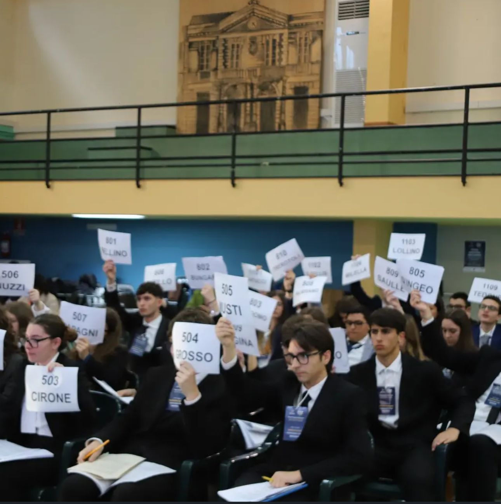
Model European Parliament
Simulazione dei lavori del Parlamento Europeo svoltasi a Febbraio 2024 in presenza nel Liceo. In qualità di "delegato", ho collaborato all'interno di una commissione consiliare per redigere una proposta di risoluzione su tematiche geopolitiche ed economiche europee, difendendola successivamente in sede di Assemblea Plenaria tramite dibattiti regolamentati.
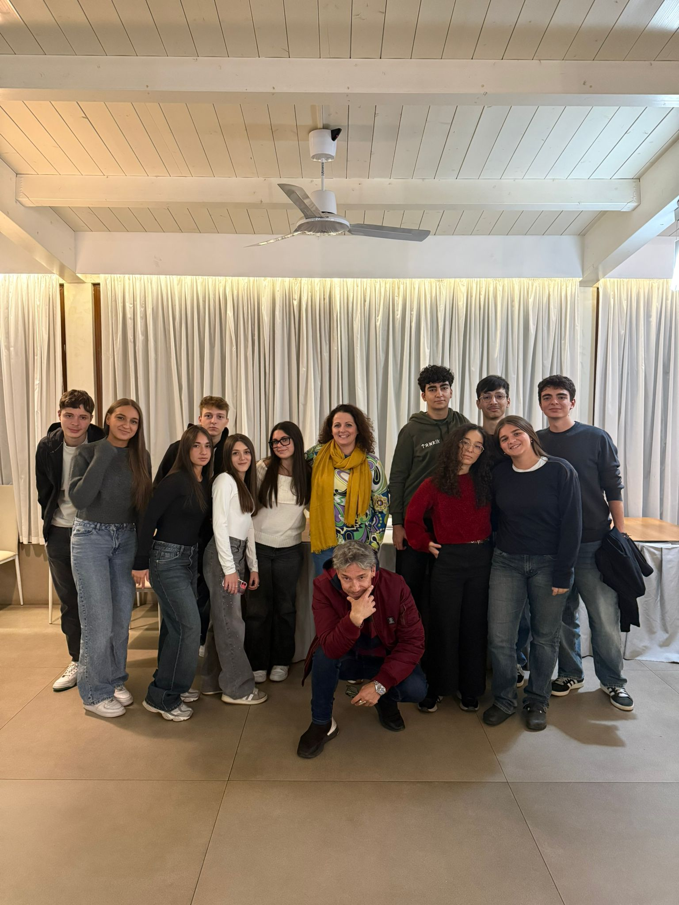
PN e POC · Biennale
Percorso biennale strutturato in due macro-moduli annui da 30 ore ciascuno. Nel primo modulo ho appreso le tecniche di sceneggiatura, scrittura creativa e ideazione del soggetto; nel secondo modulo abbiamo affrontato la produzione pratica sul campo: regia, fotografia, gestione audio e riprese.
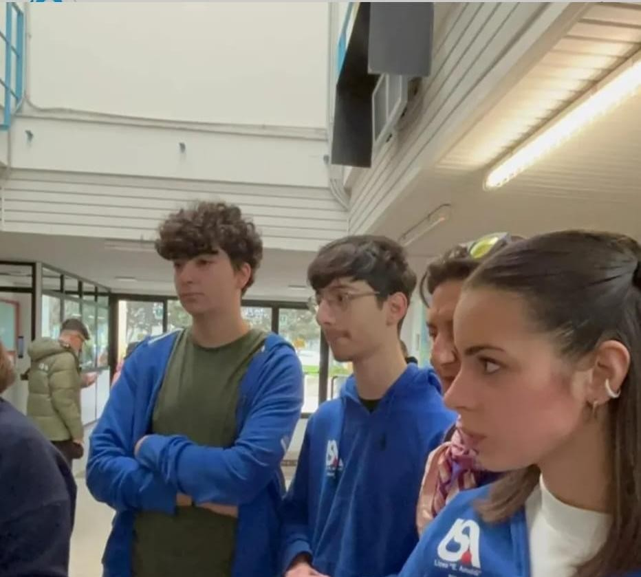
Studente Orientatore
Partecipazione in qualità di studente orientatore durante le giornate di apertura al pubblico del Liceo. Il compito prevedeva l'accoglienza delle famiglie e degli studenti delle scuole medie inferiori, la guida all'interno dei laboratori d'istituto e la presentazione dell'offerta formativa.
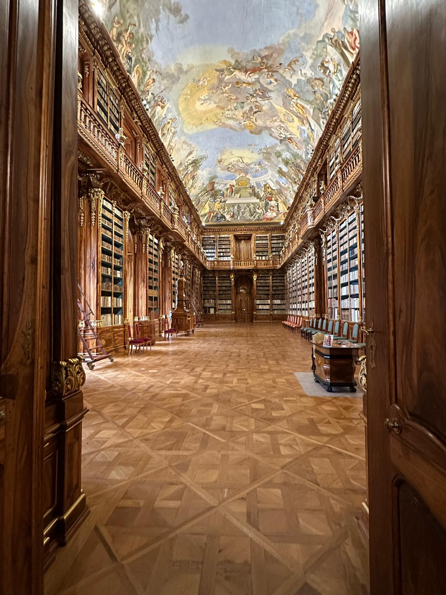
Mobilità Scolastica Culturale
Esperienza di mobilità scolastica culturale all'estero nella città di Praga. Oltre all'indubbio valore storico-artistico derivante dalle visite guidate all'interno del patrimonio architettonico mitteleuropeo, il viaggio ha rappresentato un'importante palestra di autonomia personale e adattamento a contesti internazionali.
05 — Autoriflessione
Il bilancio complessivo delle attività svolte nel corso del triennio è ampiamente positivo. I percorsi per le competenze trasversali mi hanno permesso di abbattere le pareti dell'aula scolastica, ponendomi a stretto contatto con metodologie di lavoro aziendali e contesti culturali di respiro europeo.
L'aspetto più stimolante è stata la multidisciplinarietà del mio percorso: questa contaminazione di saperi — tecnologici e umanistici — è l'elemento che ritengo più prezioso per il mio futuro.
Le competenze logico-computazionali e analitiche acquisite con i corsi Boolean (HTML, JavaScript, Python, Tableau) integrano e completano perfettamente le abilità critiche, ermeneutiche e di espressione verbale maturate nei Festival della Filosofia in Italia e all'estero.
Le attività extracurriculari, guidate dall'esperienza cinematografica di "CinemAmaldi" e dalla diplomazia del MEP, hanno ulteriormente arricchito la mia capacità di gestione progettuale e di espressione creativa, fornendo strumenti concreti per affrontare sfide complesse e multidimensionali.
In conclusione, il percorso PCTO e i progetti integrativi hanno contribuito in modo determinante a trasformare le mie conoscenze teoriche in competenze agite, orientando con maggiore consapevolezza e maturità le mie scelte per il futuro percorso universitario e professionale.
Firma
Francesco Simeone
Liceo Scientifico "E. Amaldi" x sempre